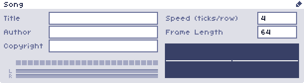

Song Panel
The song panel is located in the top right of the main screen. Clicking the pencil icon in the top right corner allows you to edit the contents.
This panel contains information about the current file -- the song's title, author, and copyright.
On the right of the panel are two number boxes for the speed and frame length.
-
Speed (ticks/row)
Determines how many "ticks" each row will last. The default length for a tick is 1/60th of a second.
You can enter multiple numbers separated by spaces to create a "groove." Writing "4 2" means that the first row will be 4 ticks long, then the second row will be 2 ticks, the third 4, the fourth 2 and so on.
This is one way to create different timing structures, like swing rhythms or odd tempos.
-
Frame Length
The number of rows in a frame. The default is 64, but this can go up to 256.
Note: the BXX, CXX, or DXX effects will cut the frame short if they are on a row prior to the end of the frame.
Below the song title, author and copyright are a set of 24 squares, these will light up green when each channel plays. Below this are volume meters for the overall stereo output. In the bottom right corner is an oscilloscope, which shows what the sound output of the program looks like.
The volume meters and oscilloscope have a few different modes that can be changed in preferences.